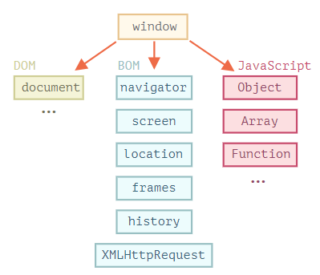

JavaSript
Работа с DOM
- Интеграция JS
- Document Object Model
- Работа с окнами
- Методы строк
Язык JavaScript изначально был создан для веб-браузеров. Но с тех пор он значительно эволюционировал и превратился в кроссплатформенный язык программирования для решения широкого круга задач.
Сегодня JavaScript может использоваться в браузере, на веб-сервере или в какой-то другой среде, даже в кофеварке. Каждая среда предоставляет свой функционал, который спецификация JavaScript называет окружением.
Окружение предоставляет свои объекты и дополнительные функции, в дополнение базовым языковым. Браузеры, например, дают средства для управления веб-страницами. Node.js делает доступными какие-то серверные возможности и так далее.

- Используя исключительно JS Сгенерируйте страницу курсов валют с приват банка и добавьте её в id root на странице inner.html файл находится в репозитории в папке к уроку CW. Курс должен выводить не менее 4 валют Пример USD 24.80 25.00
-
Нарисовать на странице круг используя параметры, которые введет пользователь.
- При загрузке страницы - показать на ней кнопку с текстом "Нарисовать круг". Данная кнопка должна являться единственным контентом в теле HTML документа, весь остальной контент должен быть создан и добавлен на страницу с помощью Javascript
- При нажатии на кнопку "Нарисовать круг" показывать одно поле ввода - диаметр круга. При нажатии на кнопку "Нарисовать" создать на странице 100 кругов (10*10) случайного цвета. При клике на конкретный круг - этот круг должен исчезать, при этом пустое место заполняться, то есть все остальные круги сдвигаются влево.
-
Написать реализацию игры ["Сапер"](http://minesweeper.odd.su/)
- Нарисовать на экране поле 8*8 (можно использовать таблицу или набор блоков).
- Сгенерировать на поле случайным образом 10 мин. Пользователь не видит где они находятся.
- Клик левой кнопкой по ячейке поля "открывает" ее содержимое пользователю.
- Если в данной ячейке находится мина, игрок проиграл. В таком случае показать все остальные мины на поле. Другие действия стают недоступны, можно только начать новую игру.
- Если мины нет, показать цифру - сколько мин находится рядом с этой ячейкой.
- Если ячейка пустая (рядом с ней нет ни одной мины) - необходимо открыть все соседние ячейки с цифрами.
- Клик правой кнопки мыши устанавливает или снимает с "закрытой" ячейки флажок мины.
- После первого хода над полем должна появляться кнопка "Начать игру заново", которая будет обнулять предыдущий результат прохождения и заново инициализировать поле.
- Над полем должно показываться количество расставленных флажков, и общее количество мин (например `7 / 10`).